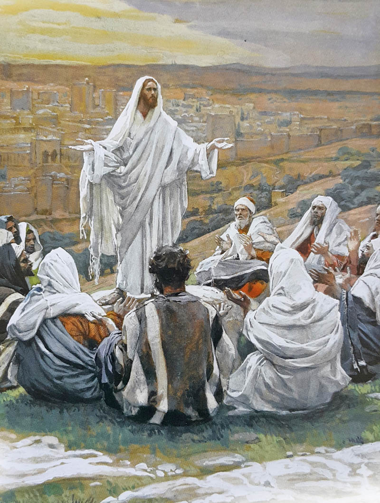

СУККОТ. Еврейские Праздники в Евангелии
Интересная тема "Еврейские Праздники в Евангелии". Библеист Илья Гриц рассказывает о ситуации в Евангелии, которая прямо не называет праздник, но дает некие намеки на него.

Художник Джеймс Тиссот. Иисус с учениками /1894г./
Илья Гриц, мой очень хороший старший товарищ из Иерусалима, библеист с колоссальным стажем, еврейский мудрец и прекрасный рассказчик, дай Бог ему здоровья, затрагивает здесь очень интересную тему "Еврейские Праздники в Евангелии". Он рассматривает известный всем эпизод "исцеление расслабленного", спущенного в дом, где пребывает Иешуа через разобранную крышу. Эта о ситуация в Евангелии прямо не называет праздник, но дает некие намеки, что все происходящее в доме - это часть еврейского праздника. Если мы принимаем это во внимание, наше понимание ситуации может быть иным. Это подобно как в живописи - в зависимости от фокуса внимания наше впечатление от картины меняется.
Здесь вы можете видеть рассказ Ильи Грица по скайпу из Иерусалима

Художник Джеймс Тиссот. Они спустили его разобрав крышу (фрагм. 1894г.)
Здесь читайте вторую часть этого рассказа.